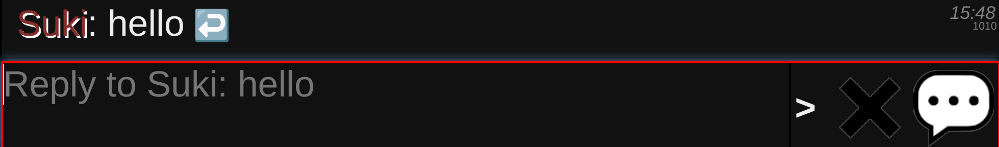
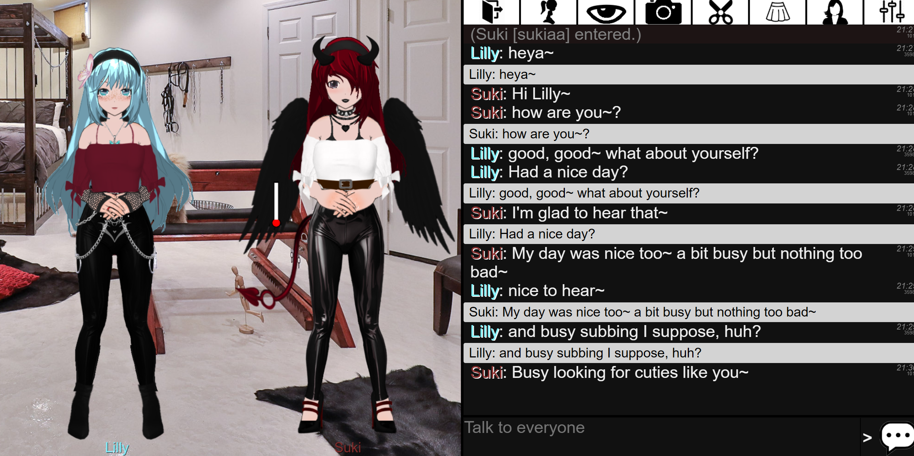
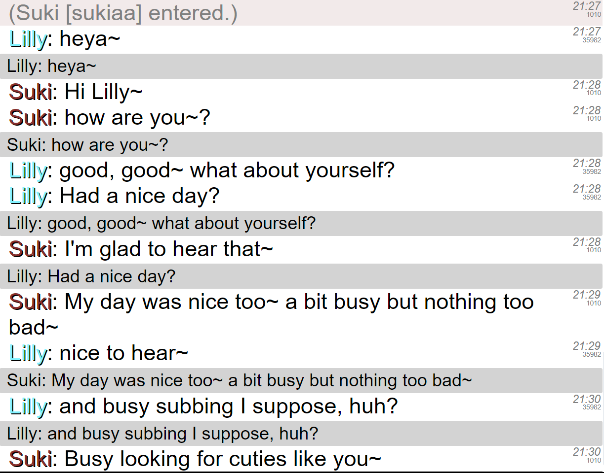
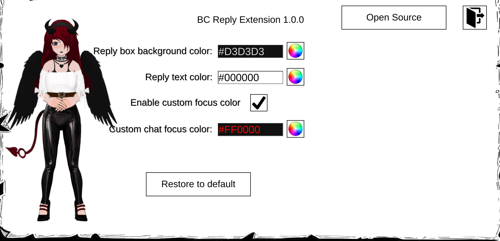

Features
The BC Reply Extension lets you reply to specific messages in a chat, just like in other messaging apps such as Discord, Messenger, WhatsApp, etc.
Installation
Stable Version
You can install the stable version through the following methods:
Tampermonkey BookmarkNote: You can also install it via the console by dumping the contents of
bcr.js, though this method is not recommended.
Screenshots
Here you can view pictures of the extension in action:
  Settings:
In the BC Reply settings, you can customize the colors for the reply box and its text as well as the border of the text area when in reply mode. This allows for personalized theme options.
